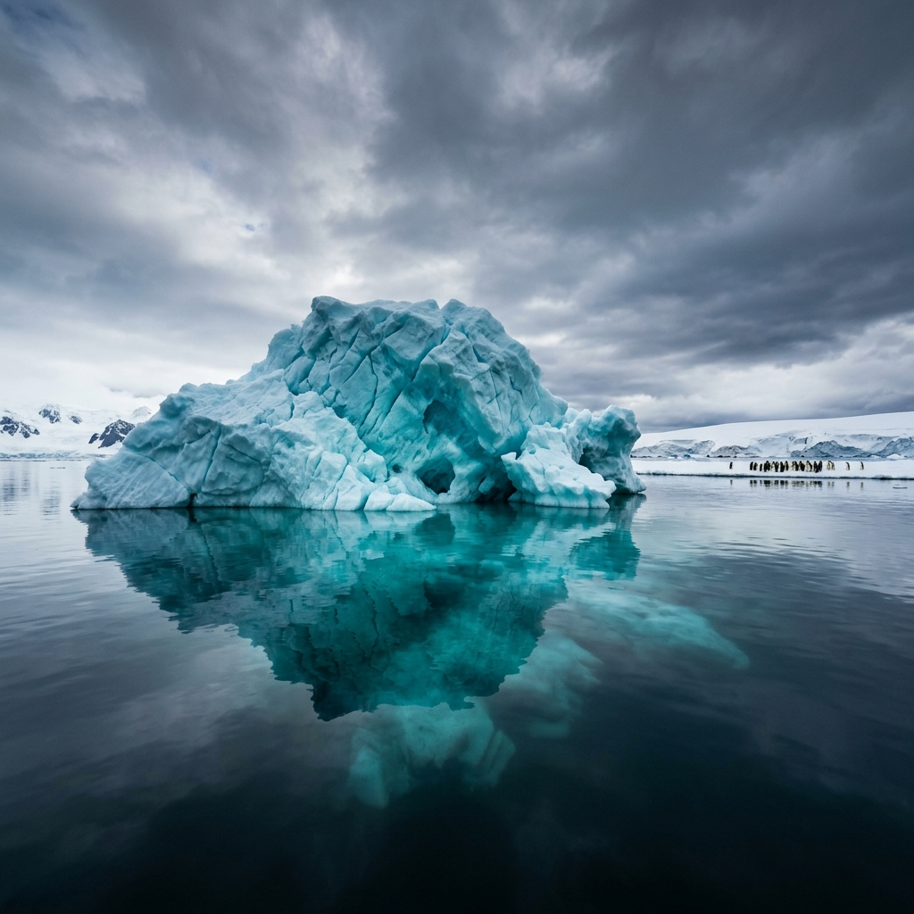

Antarctica
The coldest, driest, windiest, highest, and most remote continent on Earth. Home to 90% of the world's ice and the most extraordinary wildlife remaining anywhere on the planet.
The Great Silence
There is a moment — usually the first time you step off a Zodiac onto an Antarctic shore and the engine cuts — when the silence arrives. Not merely the absence of noise, but a positive force: the original quiet of a world that existed before humans, and that will continue to exist long after us. The scale of the landscape — white mountains, blue-black water, air so clear it seems amplified — makes ordinary thought impossible.
Antarctica is the only continent with no indigenous human population and no government. It exists under the Antarctic Treaty System of 1959 — a remarkable document in which 12 nations agreed to dedicate the continent entirely to peace and science. It is the last great wilderness on Earth, and visiting it carries a particular kind of responsibility.
Expedition ships carry no more than 500 passengers, and strict protocols govern landings — never more than 100 people ashore at one time, always in the company of naturalist guides, always maintaining a respectful distance from wildlife. The experience is intimate, unhurried, and guided by genuine knowledge of the environment.
The Gateway Ports
Antarctica is reached exclusively by expedition ship. Chile's two primary departure ports — Puerto Williams and Punta Arenas — are among the world's most remarkable destinations in their own right, and both sit within the Magallanes Region, the administrative heart of Chile's Antarctic gateway.
Puerto Williams, at 54°56'S, is the world's southernmost city and Chile's principal Antarctic departure port. The approach from Puerto Williams traverses the full length of the Beagle Channel and the spectacular channels of the Hardy Peninsula — a prelude to Antarctica that is itself an expedition. For travelers seeking the most southerly and most authentic Chilean departure, Puerto Williams is the definitive choice. From here, expedition vessels reach the Antarctic Peninsula in approximately 36–48 hours.
Punta Arenas, capital of the Magallanes Region, is the region's largest city and transport hub, with daily flights from Santiago. Ships departing from Punta Arenas traverse the full length of the Strait of Magellan and the Beagle Channel before heading south — an extended itinerary that adds extraordinary Chilean Patagonian scenery to the Antarctic journey. The city offers full expedition infrastructure, including equipment outfitters, cold-weather specialists, and experienced Antarctic logistics operators.
Antarctic Seasons
The austral summer — October to March — is the only period when Antarctica is accessible to visitors. Each phase of the season offers dramatically different conditions and wildlife.
Sea ice is still breaking up, creating dramatic icescape photography opportunities. Penguin colonies are beginning to establish — courtship and nest-building underway. Access may be limited by ice, but wildlife encounters are exceptional.
The peak season. Near 24-hour daylight, warmest temperatures (−2°C to +2°C), and maximum wildlife activity. Penguin chicks are hatching and growing. Whale activity peaks in January. The most popular and most expensive period.
Penguin chicks are fledging and the colonies thinning. Whale activity remains high. Fewer tourists, lower prices. The light is extraordinary — golden and raking — perfect for photography. Days are shortening.
Antarctica closes to tourist ships. The continent enters its dark winter — temperatures plummet, sea ice extends hundreds of kilometers north, and only scientific station personnel remain. An almost mythically inaccessible world.
Antarctic Wildlife
In an environment of extreme cold and minimal terrestrial biology, the ocean supports some of the most abundant wildlife concentrations on Earth.
Penguins
Seven species found in Antarctic waters: Chinstrap, Adélie, Emperor, Gentoo, Macaroni, Rockhopper, and King. Colonies number in the tens of thousands. The Emperor is the only species to breed during the Antarctic winter.
Whales
Humpback whales are the most commonly sighted, breaching spectacularly around expedition ships. Orca (killer whales) hunt seals in the shallows. Blue whales — the largest animals on Earth — feed in the rich krill waters of the Southern Ocean.
Seals
Weddell, Crabeater, Leopard, and Southern Elephant seals haul out on ice floes and beaches. Leopard seals — fierce predators — hunt penguins and are sometimes seen pursuing Zodiacs with apparent curiosity. Elephant seals are found primarily on sub-Antarctic islands.
Albatrosses
The Wandering Albatross — with the largest wingspan of any living bird at up to 3.5 meters — soars effortlessly alongside ships. They can fly for years without landing, covering thousands of kilometers on a single glide. Their grace in violent wind is impossible to overstate.
Krill
Antarctic krill — tiny crustaceans — are the keystone species of the entire Southern Ocean ecosystem. In swarms that can be seen from space, they support everything above them in the food chain: penguins, seals, whales, and seabirds. Without krill, Antarctica's extraordinary wildlife would collapse.
Ice Ecosystems
The ice itself is alive. Algae grow in it, tinting the undersurface green and providing food for krill. Ice caves, meltwater pools, and the interface between ice and sea are all microhabitats of extraordinary richness, studied by scientists from the research stations that dot the Antarctic Peninsula.
"Antarctica is the only place I have ever been where I felt genuinely small — not in a diminishing way, but in the way a child feels when they first understand the size of the ocean."